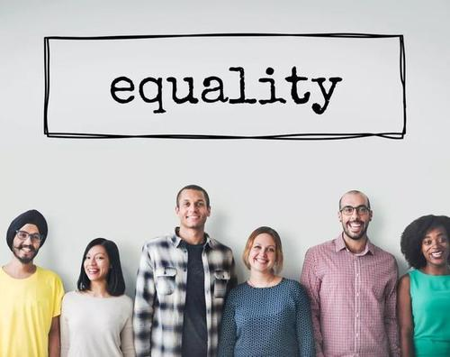

Feminism Analysis
Conclusion
After analysising on the male and female workers status from different aspects over these years, I get some interesting findings.
Firstly, in the middle east area, female workers are much less than male workers.This is caused by many reasons like local tradition that women cannot show face in public which constraints them to work. However, over the last 2 decades, female workers' participation is increased as male workers' participation is decreased. This condition shows the improvement of women status in the whole world.
Secondly, even though female industry workers' number is much less than male industry workers, female service workers' rate is much higher. What's more, female service workers' rate is keep increasing over years. Though male service workers' rate is increased, the increasing rate is smaller than female workers'.
Suggestion
My suggestion is that female workers can look for more opportunities in service industry. After all, economic independence can ensure livelihood independence. Feminism is gradually successful in the whole world as compared to 2000, more females get work no matter in agriculture, self-employed, service or industry in 2019. In contrast, male workers participation is not increased clearly even decreased. This is a sign of the rise of female.
April 2020 @Changhao Ying
The George Washington University, Data science